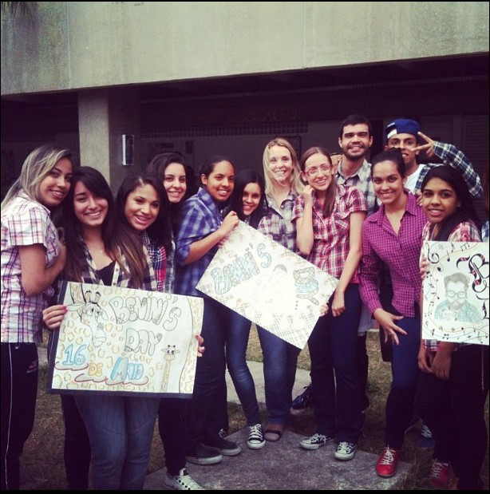
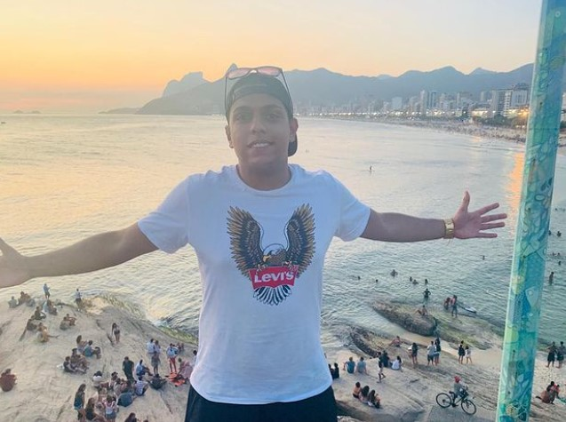

Quando eu era adolescente era muito fã de Grey's Anatomy e por isso decidi estudar na área da saúde.
Com 16 anos participei do processo seletivo da Etec e passei para cursar Técnico em Farmácia.

Durante 1 ano e meio tive que me adaptar em uma rotina dupla de estudos para conseguir a formação do curso técnico.
Com dedicação e esforço consegui me formar e aos 18 anos tive a oportunidade de iniciar minha carreira de trabalho em um Ambulatório
de Especialidade (AME) localizado no bairro de Heliópolis.
Ao começar a trabalhar tive o primeiro contato com a área cirúrgica da unidade e
ali descobri que não tinha nenhuma semelhança com o que era apresentado no seriado na qual assistia,
percebi essa diferença por ser um hospital público, notei a necessidades das pessoas que frequentam aquele local,
pessoas carentes precisando de ajuda enquanto os médicos chegavam esbanjando carros chiques
e uma qualidade de vida totalmente diferente daquelas pessoas.
Em paralelo a essa rotina de trabalho ingressei na faculdade para realizar o curso de Farmácia,
porém comecei refletir que a área da saúde é muito ingrata para quem não é médico, pois no meu caso como técnico
de uma determinada área a rotina era cansativa, sem reconhecimento, poucas oportunidades, com tudo isso surgiu
o desânimo que me fez trancar a faculdade e migrar para uma nova área, a Engenharia Civil.
Mesmo estudando engenharia continuei atuando/trabalhando na área da saúde por mais 3 anos,
notei que na empresa não tinha reconhecimento da parte dos meus superiores e a perspectiva dentro da empresa só diminuía
Na engenharia pensava que iria conseguir grandes oportunidades, mas no ano que iria me formar aconteceu
a epidemia do coronavírus impossibilitando algumas atividades no mercado de trabalho, a área que já não era boa só piorou
com essa situação que passamos.
Nesses dois últimos anos de faculdade tomei a decisão de que não gostaria de seguir a profissão
de engenheiro desde então, vinha buscando novas oportunidades em outras áreas e assim soube da Generation Brasil.
Apesar de sempre gostar de tecnologia e jogos, nunca tinha pensado em fazer algum curso
na área de tecnologia, e para a minha surpresa é algo novo que estou disposto a encarar desafios e estou
conseguindo me reencontrar depois de várias tentativas.
Além de tudo, sou muito grato por tudo que tenho em minha vida...
